Human Failure Representation
This paper covers the exploration and analysis of error producing conditions by a human operator in the rover model.
[55]:
import sys, os
sys.path.insert(0,os.path.join('..','..'))
from rover_model_human import Rover, gen_params
from rover_model import plot_map, plot_trajectories
import fmdtools.resultdisp as rd
import fmdtools.faultsim.propagate as prop
from fmdtools.modeldef import SampleApproach, NominalApproach
import numpy as np
import matplotlib.pyplot as plt
[56]:
prop
[56]:
<module 'fmdtools.faultsim.propagate' from 'C:\\Users\\dhulse\\Documents\\GitHub\\fmdtools\\example_rover\\HFAC_Analyses\\..\\..\\fmdtools\\faultsim\\propagate.py'>
Visualizing Rover Structure
[57]:
mdl = Rover()
[58]:
#%matplotlib qt
#rd.graph.set_pos(mdl, gtype='bipartite')
[59]:
#%matplotlib inline
[60]:
mdl = Rover()
fig, ax = rd.graph.show(mdl, gtype='bipartite')

[61]:
fig.savefig("rover_structure.pdf", format="pdf", bbox_inches = 'tight', pad_inches = 0)
Visualizing Action Sequence Graph for the Controller
[62]:
mdl.fxns['Controller'].action_graph
[62]:
<networkx.classes.digraph.DiGraph at 0x1ecb2b60a60>
[63]:
#%matplotlib qt
#rd.graph.set_pos(mdl.fxns['Controller'].flow_graph)
[64]:
#%matplotlib inline
[65]:
act_pos={'Press': [0.942, 0.076], 'ComprehendOut': [0.302, 0.452], 'SeeOut': [0.028, 0.732],
'Project': [0.499, 0.46], 'PressOut': [0.958, -0.07], 'Reach': [0.797, 0.175],
'ProjectOut': [0.482, 0.302], 'ReachOut': [0.806, 0.041], 'Comprehend': [0.317, 0.595],
'Look': [0.038, 0.877], 'Decide': [0.667, 0.308], 'DecideOut': [0.652, 0.189],
'Signal': [0.721, 0.736], 'Percieve': [0.165, 0.738], 'PercieveOut': [0.102, 0.594],
'Video': [0.418, 0.889], 'Stimulus': [0.026, 1.034], 'LocalPSF': [0.717, 0.484],
'GlobalPSF': [0.521, 0.836]}
[66]:
%matplotlib qt
rd.graph.set_pos(mdl.fxns['Controller'].flow_graph, pos=act_pos)
[66]:
<fmdtools.resultdisp.graph.GraphInteractor at 0x1ecb0442df0>
[67]:
%matplotlib inline
[68]:
fig = mdl.fxns['Controller'].show_ASG(pos=act_pos, with_cond_labels=False)
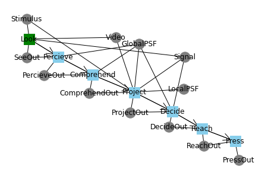
[69]:
fig.savefig("action_graph.pdf", format="pdf", bbox_inches = 'tight', pad_inches = 0)
Testing behavioral simulation
[70]:
mdl = Rover()
Execution order
[71]:
order_fig = rd.graph.exec_order(mdl, gtype='bipartite')
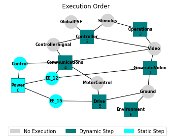
Performance on turn
[78]:
mdl = Rover(params=gen_params('turn', start=5))
endresults, mdlhist = prop.nominal(mdl)
plot_map(mdl, mdlhist)
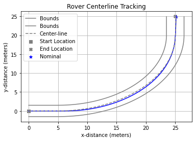
Performance on sine map
[79]:
mdl = Rover(params=gen_params('sine', amp=2, wavelength=30))
endresults, mdlhist = prop.nominal(mdl)
plot_map(mdl, mdlhist)

[80]:
phases, modephases = rd.process.modephases(mdlhist)
[81]:
phase_fig = rd.plot.phases(phases, modephases=modephases, title_padding=-0.05, v_padding=0.5)
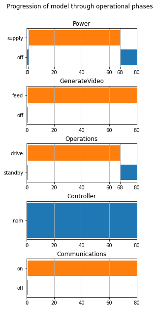
Testing Faults
[82]:
app=SampleApproach(mdl, faults='Controller', phases={'drive':phases['Operations']['drive']})
[83]:
app.rates
[83]:
{('Controller', 'stuck_turn'): {('global', 'drive'): 34.0},
('Controller', 'stuck_power'): {('global', 'drive'): 34.0},
('Controller', 'failed_look'): {('global', 'drive'): 68.0},
('Controller', 'perc_failed_S1'): {('global', 'drive'): 9.714285714285714},
('Controller', 'perc_failed_Video'): {('global', 'drive'): 9.714285714285714},
('Controller',
'perc_failed_S1_temp'): {('global', 'drive'): 9.714285714285714},
('Controller',
'perc_failed_S2_temp'): {('global', 'drive'): 9.714285714285714},
('Controller',
'perc_failed_noaction'): {('global', 'drive'): 9.714285714285714},
('Controller',
'perc_failed_Video_temp'): {('global', 'drive'): 9.714285714285714},
('Controller', 'perc_failed_S2'): {('global', 'drive'): 9.714285714285714},
('Controller', 'comp_failed_S1'): {('global', 'drive'): 9.714285714285714},
('Controller', 'comp_failed_Video'): {('global', 'drive'): 9.714285714285714},
('Controller',
'comp_failed_S1_temp'): {('global', 'drive'): 9.714285714285714},
('Controller',
'comp_failed_S2_temp'): {('global', 'drive'): 9.714285714285714},
('Controller',
'comp_failed_noaction'): {('global', 'drive'): 9.714285714285714},
('Controller',
'comp_failed_Video_temp'): {('global', 'drive'): 9.714285714285714},
('Controller', 'comp_failed_S2'): {('global', 'drive'): 9.714285714285714},
('Controller',
'proj_failed_noturn'): {('global', 'drive'): 9.714285714285714},
('Controller',
'proj_failed_noaction'): {('global', 'drive'): 9.714285714285714},
('Controller',
'proj_failed_poweroff'): {('global', 'drive'): 9.714285714285714},
('Controller',
'proj_failed_turn_right'): {('global', 'drive'): 9.714285714285714},
('Controller',
'proj_failed_turn_left'): {('global', 'drive'): 9.714285714285714},
('Controller',
'proj_failed_poweron'): {('global', 'drive'): 9.714285714285714},
('Controller',
'proj_failed_nopower'): {('global', 'drive'): 9.714285714285714},
('Controller',
'decide_failed_noturn'): {('global', 'drive'): 9.714285714285714},
('Controller',
'decide_failed_noaction'): {('global', 'drive'): 9.714285714285714},
('Controller',
'decide_failed_poweroff'): {('global', 'drive'): 9.714285714285714},
('Controller',
'decide_failed_turn_right'): {('global', 'drive'): 9.714285714285714},
('Controller',
'decide_failed_turn_left'): {('global', 'drive'): 9.714285714285714},
('Controller',
'decide_failed_poweron'): {('global', 'drive'): 9.714285714285714},
('Controller',
'decide_failed_nopower'): {('global', 'drive'): 9.714285714285714},
('Controller', 'cannot_reach'): {('global', 'drive'): 68.0},
('Controller',
'press_failed_noaction'): {('global', 'drive'): 22.666666666666664},
('Controller',
'press_failed_long'): {('global', 'drive'): 22.666666666666664},
('Controller',
'press_failed_short'): {('global', 'drive'): 22.666666666666664}}
[84]:
app.times
[84]:
[35]
[85]:
endclasses,mdlhists = prop.approach(mdl, app)
SCENARIOS COMPLETE: 17%|██████████▊ | 6/35 [00:00<00:01, 21.54it/s]C:\Users\dhulse\Documents\GitHub\fmdtools\example_rover\HFAC_Analyses\..\..\fmdtools\modeldef.py:801: UserWarning: The screen is already not visible to the operator. All faults removed.
if warnmessage: self.warn(warnmessage, "All faults removed.")
SCENARIOS COMPLETE: 51%|███████████████████████████████▉ | 18/35 [00:00<00:00, 20.93it/s]C:\Users\dhulse\Documents\GitHub\fmdtools\rad_models\rover\rover_model_human.py:412: UserWarning: The Signal requires a right turn. Fault mode `failed_turnright' removed.
self.remove_fault('failed_turnright', opermode='nominal', warnmessage='The Signal requires a right turn.')
C:\Users\dhulse\Documents\GitHub\fmdtools\rad_models\rover\rover_model_human.py:469: UserWarning: The Signal requires a right turn. Fault mode `failed_turnright' removed.
self.remove_fault('failed_turnright', opermode='nominal', warnmessage='The Signal requires a right turn.')
SCENARIOS COMPLETE: 60%|█████████████████████████████████████▏ | 21/35 [00:01<00:00, 20.49it/s]C:\Users\dhulse\Documents\GitHub\fmdtools\rad_models\rover\rover_model_human.py:408: UserWarning: The Signal requires a left turn. Fault mode `failed_turn_left' removed.
self.remove_fault('failed_turn_left', opermode='nominal', warnmessage='The Signal requires a left turn.')
C:\Users\dhulse\Documents\GitHub\fmdtools\rad_models\rover\rover_model_human.py:429: UserWarning: The Signal requires no power on/off actions. Fault mode `failed_nopower' removed.
self.remove_fault('failed_nopower', opermode='nominal', warnmessage='The Signal requires no power on/off actions.')
SCENARIOS COMPLETE: 80%|█████████████████████████████████████████████████▌ | 28/35 [00:01<00:00, 18.93it/s]C:\Users\dhulse\Documents\GitHub\fmdtools\rad_models\rover\rover_model_human.py:465: UserWarning: The Signal requires a left turn. Fault mode `failed_turn_left' removed.
self.remove_fault('failed_turn_left', opermode='nominal', warnmessage='The Signal requires a left turn.')
SCENARIOS COMPLETE: 86%|█████████████████████████████████████████████████████▏ | 30/35 [00:01<00:00, 19.14it/s]C:\Users\dhulse\Documents\GitHub\fmdtools\rad_models\rover\rover_model_human.py:486: UserWarning: The Signal requires no power on/off actions. Fault mode `failed_nopower' removed.
self.remove_fault('failed_nopower', opermode='nominal', warnmessage='The Signal requires no power on/off actions.')
SCENARIOS COMPLETE: 100%|██████████████████████████████████████████████████████████████| 35/35 [00:01<00:00, 19.90it/s]
[86]:
fig = plt.figure(figsize=(5.25,3.5))
fig = plot_trajectories(mdlhists, app=app, faultlabel='Faulty Scenarios', title='', mode_trunc=len('Controller'), mode_trunc_end=4, show_labels=False, xlim=(-1,65), ylim=(-12,12))
<Figure size 378x252 with 0 Axes>

[87]:
fig
[87]:
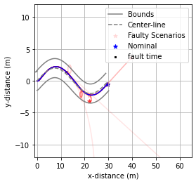
[88]:
fig.savefig("rover_map.pdf", format="pdf", bbox_inches = 'tight', pad_inches = 0)
Below shows the impact of each fault:
[89]:
reshists, diffs, summaries = rd.process.hists(mdlhists)
new_fault_tab = rd.tabulate.fullfmea(endclasses, summaries)
new_fault_tab = new_fault_tab.sort_values('end_dist', ascending=False)
new_fault_tab
[89]:
| degraded functions | degraded flows | rate | cost | prob | expected cost | at_finish | line_dist | num_modes | end_dist | faults | classification | x | y | |
|---|---|---|---|---|---|---|---|---|---|---|---|---|---|---|
| Controller press_failed_noaction, t=35 | [Power, Operations, Controller] | [Ground, EE_15, Video, MotorControl, Control, ... | 0 | 0 | 1 | 0 | False | 29.464277 | 1 | 29.149863 | {'Controller': ['press_failed_noaction']} | incomplete mission faulty | 55.877858 | -13.418307 |
| Controller stuck_turn, t=35 | [Power, Operations, Controller] | [Ground, EE_15, Video, MotorControl, Control, ... | 0 | 0 | 1 | 0 | False | 14.493558 | 1 | 17.393753 | {'Controller': ['stuck_turn']} | incomplete mission faulty | 24.292566 | -16.430698 |
| Controller decide_failed_poweroff, t=35 | [Power, Operations, Controller] | [Ground, EE_15, Video, MotorControl, Control, ... | 0 | 0 | 1 | 0 | False | 0.339437 | 1 | 17.212349 | {'Controller': ['decide_failed_poweroff']} | incomplete mission faulty | 12.830739 | 1.217155 |
| Controller proj_failed_poweroff, t=35 | [Power, Operations, Controller] | [Ground, EE_15, Video, MotorControl, Control, ... | 0 | 0 | 1 | 0 | False | 0.339437 | 1 | 17.212349 | {'Controller': ['decide_failed_poweroff', 'pro... | incomplete mission faulty | 12.830739 | 1.217155 |
| Controller decide_failed_poweron, t=35 | [Power, Operations, Controller] | [Ground, EE_15, Video, Control, ControllerSignal] | 0 | 0 | 1 | 0 | False | 10.876464 | 1 | 10.390265 | {'Controller': ['decide_failed_poweron']} | incomplete mission faulty | 39.730604 | 3.643207 |
| Controller proj_failed_poweron, t=35 | [Power, Operations, Controller] | [Ground, EE_15, Video, Control, ControllerSignal] | 0 | 0 | 1 | 0 | False | 10.876464 | 1 | 10.390265 | {'Controller': ['decide_failed_poweron', 'proj... | incomplete mission faulty | 39.730604 | 3.643207 |
| Controller stuck_power, t=35 | [Power, Operations, Controller] | [Ground, EE_15, Video, Control, ControllerSignal] | 0 | 0 | 1 | 0 | False | 10.876464 | 1 | 10.390265 | {'Controller': ['stuck_power']} | incomplete mission faulty | 39.730604 | 3.643207 |
| Controller comp_failed_noaction, t=35 | [Power, Operations, Controller] | [Ground, EE_15, Video, MotorControl, Control, ... | 0 | 0 | 1 | 0 | False | 1.234222 | 1 | 8.568927 | {'Controller': ['comp_failed_noaction']} | incomplete mission faulty | 22.055955 | -3.212267 |
| Controller cannot_reach, t=35 | [Power, Operations, Controller] | [Ground, EE_15, Video, MotorControl, Control, ... | 0 | 0 | 1 | 0 | False | 1.234222 | 1 | 8.568927 | {'Controller': ['cannot_reach']} | incomplete mission faulty | 22.055955 | -3.212267 |
| Controller decide_failed_noaction, t=35 | [Power, Operations, Controller] | [Ground, EE_15, Video, MotorControl, Control, ... | 0 | 0 | 1 | 0 | False | 1.234222 | 1 | 8.568927 | {'Controller': ['decide_failed_noaction']} | incomplete mission faulty | 22.055955 | -3.212267 |
| Controller decide_failed_noturn, t=35 | [Power, Operations, Controller] | [Ground, EE_15, Video, MotorControl, Control, ... | 0 | 0 | 1 | 0 | False | 1.234222 | 1 | 8.568927 | {'Controller': ['decide_failed_noturn']} | incomplete mission faulty | 22.055955 | -3.212267 |
| Controller proj_failed_noturn, t=35 | [Power, Operations, Controller] | [Ground, EE_15, Video, MotorControl, Control, ... | 0 | 0 | 1 | 0 | False | 1.234222 | 1 | 8.568927 | {'Controller': ['decide_failed_noturn', 'proj_... | incomplete mission faulty | 22.055955 | -3.212267 |
| Controller proj_failed_noaction, t=35 | [Power, Operations, Controller] | [Ground, EE_15, Video, MotorControl, Control, ... | 0 | 0 | 1 | 0 | False | 1.234222 | 1 | 8.568927 | {'Controller': ['proj_failed_noaction']} | incomplete mission faulty | 22.055955 | -3.212267 |
| Controller failed_look, t=35 | [Power, Operations, Controller] | [Ground, EE_15, Video, MotorControl, Control, ... | 0 | 0 | 1 | 0 | False | 1.234222 | 1 | 8.568927 | {'Controller': ['failed_look']} | incomplete mission faulty | 22.055955 | -3.212267 |
| Controller proj_failed_turn_right, t=35 | [Power, Operations, Controller] | [Ground, EE_15, Video, MotorControl, Control, ... | 0 | 0 | 1 | 0 | False | 0.332904 | 1 | 8.36838 | {'Controller': ['proj_failed_turn_right', 'dec... | incomplete mission faulty | 21.958552 | -2.316227 |
| Controller decide_failed_turn_right, t=35 | [Power, Operations, Controller] | [Ground, EE_15, Video, MotorControl, Control, ... | 0 | 0 | 1 | 0 | False | 0.332904 | 1 | 8.36838 | {'Controller': ['decide_failed_turn_right']} | incomplete mission faulty | 21.958552 | -2.316227 |
| Controller perc_failed_noaction, t=35 | [Power, Operations, Controller] | [Ground, EE_15, Video, MotorControl, Control, ... | 0 | 0 | 1 | 0 | False | 0.205794 | 0 | 5.31794 | {} | incomplete mission | 25.040567 | -1.919509 |
| Controller press_failed_long, t=35 | [Power, Operations, Controller] | [Ground, EE_15, Video, MotorControl, Controlle... | 0 | 0 | 1 | 0 | True | 0.317563 | 1 | 0.707297 | {'Controller': ['press_failed_long']} | faulty | 29.501061 | -0.501326 |
| Controller perc_failed_S2_temp, t=35 | [Operations] | [] | 0 | 0 | 1 | 0 | True | 0.337829 | 0 | 0.69115 | {} | nominal mission | 29.551148 | -0.525567 |
| Controller perc_failed_S1, t=35 | [Operations, Controller] | [] | 0 | 0 | 1 | 0 | True | 0.337829 | 1 | 0.69115 | {'Controller': ['perc_failed_S1', 'comp_failed... | faulty | 29.551148 | -0.525567 |
| Controller decide_failed_nopower, t=35 | [Operations] | [] | 0 | 0 | 1 | 0 | True | 0.337829 | 0 | 0.69115 | {} | nominal mission | 29.551148 | -0.525567 |
| Controller perc_failed_Video, t=35 | [Operations, Controller] | [] | 0 | 0 | 1 | 0 | True | 0.337829 | 1 | 0.69115 | {'Controller': ['perc_failed_Video', 'comp_fai... | faulty | 29.551148 | -0.525567 |
| Controller decide_failed_turn_left, t=35 | [Operations] | [] | 0 | 0 | 1 | 0 | True | 0.337829 | 0 | 0.69115 | {} | nominal mission | 29.551148 | -0.525567 |
| Controller perc_failed_S1_temp, t=35 | [Operations] | [] | 0 | 0 | 1 | 0 | True | 0.337829 | 0 | 0.69115 | {} | nominal mission | 29.551148 | -0.525567 |
| Controller comp_failed_S2_temp, t=35 | [Operations] | [] | 0 | 0 | 1 | 0 | True | 0.337829 | 0 | 0.69115 | {} | nominal mission | 29.551148 | -0.525567 |
| Controller comp_failed_S1_temp, t=35 | [Operations] | [] | 0 | 0 | 1 | 0 | True | 0.337829 | 0 | 0.69115 | {} | nominal mission | 29.551148 | -0.525567 |
| Controller proj_failed_nopower, t=35 | [Operations] | [] | 0 | 0 | 1 | 0 | True | 0.337829 | 0 | 0.69115 | {} | nominal mission | 29.551148 | -0.525567 |
| Controller perc_failed_Video_temp, t=35 | [Operations] | [] | 0 | 0 | 1 | 0 | True | 0.337829 | 0 | 0.69115 | {} | nominal mission | 29.551148 | -0.525567 |
| Controller proj_failed_turn_left, t=35 | [Operations] | [] | 0 | 0 | 1 | 0 | True | 0.337829 | 0 | 0.69115 | {} | nominal mission | 29.551148 | -0.525567 |
| Controller perc_failed_S2, t=35 | [Operations, Controller] | [] | 0 | 0 | 1 | 0 | True | 0.337829 | 1 | 0.69115 | {'Controller': ['comp_failed_S2_temp', 'perc_f... | faulty | 29.551148 | -0.525567 |
| Controller comp_failed_S1, t=35 | [Operations, Controller] | [] | 0 | 0 | 1 | 0 | True | 0.337829 | 1 | 0.69115 | {'Controller': ['comp_failed_S1']} | faulty | 29.551148 | -0.525567 |
| Controller comp_failed_Video, t=35 | [Operations, Controller] | [] | 0 | 0 | 1 | 0 | True | 0.337829 | 1 | 0.69115 | {'Controller': ['comp_failed_Video']} | faulty | 29.551148 | -0.525567 |
| Controller comp_failed_S2, t=35 | [Operations, Controller] | [] | 0 | 0 | 1 | 0 | True | 0.337829 | 1 | 0.69115 | {'Controller': ['comp_failed_S2']} | faulty | 29.551148 | -0.525567 |
| Controller comp_failed_Video_temp, t=35 | [Operations] | [] | 0 | 0 | 1 | 0 | True | 0.337829 | 0 | 0.69115 | {} | nominal mission | 29.551148 | -0.525567 |
| nominal | NaN | NaN | 0 | 0 | 1 | 0 | True | 0.337829 | 0 | 0.69115 | {} | nominal mission | 29.551148 | -0.525567 |
| Controller press_failed_short, t=35 | [Power, Operations, Controller] | [Ground, EE_15, Video, MotorControl, Controlle... | 0 | 0 | 1 | 0 | True | 0.374152 | 1 | 0.674964 | {'Controller': ['press_failed_short']} | faulty | 29.617314 | -0.555993 |
[90]:
fault_tab = new_fault_tab[['degraded functions','degraded flows', 'classification', 'end_dist']]
fault_tab
[90]:
| degraded functions | degraded flows | classification | end_dist | |
|---|---|---|---|---|
| Controller press_failed_noaction, t=35 | [Power, Operations, Controller] | [Ground, EE_15, Video, MotorControl, Control, ... | incomplete mission faulty | 29.149863 |
| Controller stuck_turn, t=35 | [Power, Operations, Controller] | [Ground, EE_15, Video, MotorControl, Control, ... | incomplete mission faulty | 17.393753 |
| Controller decide_failed_poweroff, t=35 | [Power, Operations, Controller] | [Ground, EE_15, Video, MotorControl, Control, ... | incomplete mission faulty | 17.212349 |
| Controller proj_failed_poweroff, t=35 | [Power, Operations, Controller] | [Ground, EE_15, Video, MotorControl, Control, ... | incomplete mission faulty | 17.212349 |
| Controller decide_failed_poweron, t=35 | [Power, Operations, Controller] | [Ground, EE_15, Video, Control, ControllerSignal] | incomplete mission faulty | 10.390265 |
| Controller proj_failed_poweron, t=35 | [Power, Operations, Controller] | [Ground, EE_15, Video, Control, ControllerSignal] | incomplete mission faulty | 10.390265 |
| Controller stuck_power, t=35 | [Power, Operations, Controller] | [Ground, EE_15, Video, Control, ControllerSignal] | incomplete mission faulty | 10.390265 |
| Controller comp_failed_noaction, t=35 | [Power, Operations, Controller] | [Ground, EE_15, Video, MotorControl, Control, ... | incomplete mission faulty | 8.568927 |
| Controller cannot_reach, t=35 | [Power, Operations, Controller] | [Ground, EE_15, Video, MotorControl, Control, ... | incomplete mission faulty | 8.568927 |
| Controller decide_failed_noaction, t=35 | [Power, Operations, Controller] | [Ground, EE_15, Video, MotorControl, Control, ... | incomplete mission faulty | 8.568927 |
| Controller decide_failed_noturn, t=35 | [Power, Operations, Controller] | [Ground, EE_15, Video, MotorControl, Control, ... | incomplete mission faulty | 8.568927 |
| Controller proj_failed_noturn, t=35 | [Power, Operations, Controller] | [Ground, EE_15, Video, MotorControl, Control, ... | incomplete mission faulty | 8.568927 |
| Controller proj_failed_noaction, t=35 | [Power, Operations, Controller] | [Ground, EE_15, Video, MotorControl, Control, ... | incomplete mission faulty | 8.568927 |
| Controller failed_look, t=35 | [Power, Operations, Controller] | [Ground, EE_15, Video, MotorControl, Control, ... | incomplete mission faulty | 8.568927 |
| Controller proj_failed_turn_right, t=35 | [Power, Operations, Controller] | [Ground, EE_15, Video, MotorControl, Control, ... | incomplete mission faulty | 8.36838 |
| Controller decide_failed_turn_right, t=35 | [Power, Operations, Controller] | [Ground, EE_15, Video, MotorControl, Control, ... | incomplete mission faulty | 8.36838 |
| Controller perc_failed_noaction, t=35 | [Power, Operations, Controller] | [Ground, EE_15, Video, MotorControl, Control, ... | incomplete mission | 5.31794 |
| Controller press_failed_long, t=35 | [Power, Operations, Controller] | [Ground, EE_15, Video, MotorControl, Controlle... | faulty | 0.707297 |
| Controller perc_failed_S2_temp, t=35 | [Operations] | [] | nominal mission | 0.69115 |
| Controller perc_failed_S1, t=35 | [Operations, Controller] | [] | faulty | 0.69115 |
| Controller decide_failed_nopower, t=35 | [Operations] | [] | nominal mission | 0.69115 |
| Controller perc_failed_Video, t=35 | [Operations, Controller] | [] | faulty | 0.69115 |
| Controller decide_failed_turn_left, t=35 | [Operations] | [] | nominal mission | 0.69115 |
| Controller perc_failed_S1_temp, t=35 | [Operations] | [] | nominal mission | 0.69115 |
| Controller comp_failed_S2_temp, t=35 | [Operations] | [] | nominal mission | 0.69115 |
| Controller comp_failed_S1_temp, t=35 | [Operations] | [] | nominal mission | 0.69115 |
| Controller proj_failed_nopower, t=35 | [Operations] | [] | nominal mission | 0.69115 |
| Controller perc_failed_Video_temp, t=35 | [Operations] | [] | nominal mission | 0.69115 |
| Controller proj_failed_turn_left, t=35 | [Operations] | [] | nominal mission | 0.69115 |
| Controller perc_failed_S2, t=35 | [Operations, Controller] | [] | faulty | 0.69115 |
| Controller comp_failed_S1, t=35 | [Operations, Controller] | [] | faulty | 0.69115 |
| Controller comp_failed_Video, t=35 | [Operations, Controller] | [] | faulty | 0.69115 |
| Controller comp_failed_S2, t=35 | [Operations, Controller] | [] | faulty | 0.69115 |
| Controller comp_failed_Video_temp, t=35 | [Operations] | [] | nominal mission | 0.69115 |
| nominal | NaN | NaN | nominal mission | 0.69115 |
| Controller press_failed_short, t=35 | [Power, Operations, Controller] | [Ground, EE_15, Video, MotorControl, Controlle... | faulty | 0.674964 |
[91]:
fault_tab
[91]:
| degraded functions | degraded flows | classification | end_dist | |
|---|---|---|---|---|
| Controller press_failed_noaction, t=35 | [Power, Operations, Controller] | [Ground, EE_15, Video, MotorControl, Control, ... | incomplete mission faulty | 29.149863 |
| Controller stuck_turn, t=35 | [Power, Operations, Controller] | [Ground, EE_15, Video, MotorControl, Control, ... | incomplete mission faulty | 17.393753 |
| Controller decide_failed_poweroff, t=35 | [Power, Operations, Controller] | [Ground, EE_15, Video, MotorControl, Control, ... | incomplete mission faulty | 17.212349 |
| Controller proj_failed_poweroff, t=35 | [Power, Operations, Controller] | [Ground, EE_15, Video, MotorControl, Control, ... | incomplete mission faulty | 17.212349 |
| Controller decide_failed_poweron, t=35 | [Power, Operations, Controller] | [Ground, EE_15, Video, Control, ControllerSignal] | incomplete mission faulty | 10.390265 |
| Controller proj_failed_poweron, t=35 | [Power, Operations, Controller] | [Ground, EE_15, Video, Control, ControllerSignal] | incomplete mission faulty | 10.390265 |
| Controller stuck_power, t=35 | [Power, Operations, Controller] | [Ground, EE_15, Video, Control, ControllerSignal] | incomplete mission faulty | 10.390265 |
| Controller comp_failed_noaction, t=35 | [Power, Operations, Controller] | [Ground, EE_15, Video, MotorControl, Control, ... | incomplete mission faulty | 8.568927 |
| Controller cannot_reach, t=35 | [Power, Operations, Controller] | [Ground, EE_15, Video, MotorControl, Control, ... | incomplete mission faulty | 8.568927 |
| Controller decide_failed_noaction, t=35 | [Power, Operations, Controller] | [Ground, EE_15, Video, MotorControl, Control, ... | incomplete mission faulty | 8.568927 |
| Controller decide_failed_noturn, t=35 | [Power, Operations, Controller] | [Ground, EE_15, Video, MotorControl, Control, ... | incomplete mission faulty | 8.568927 |
| Controller proj_failed_noturn, t=35 | [Power, Operations, Controller] | [Ground, EE_15, Video, MotorControl, Control, ... | incomplete mission faulty | 8.568927 |
| Controller proj_failed_noaction, t=35 | [Power, Operations, Controller] | [Ground, EE_15, Video, MotorControl, Control, ... | incomplete mission faulty | 8.568927 |
| Controller failed_look, t=35 | [Power, Operations, Controller] | [Ground, EE_15, Video, MotorControl, Control, ... | incomplete mission faulty | 8.568927 |
| Controller proj_failed_turn_right, t=35 | [Power, Operations, Controller] | [Ground, EE_15, Video, MotorControl, Control, ... | incomplete mission faulty | 8.36838 |
| Controller decide_failed_turn_right, t=35 | [Power, Operations, Controller] | [Ground, EE_15, Video, MotorControl, Control, ... | incomplete mission faulty | 8.36838 |
| Controller perc_failed_noaction, t=35 | [Power, Operations, Controller] | [Ground, EE_15, Video, MotorControl, Control, ... | incomplete mission | 5.31794 |
| Controller press_failed_long, t=35 | [Power, Operations, Controller] | [Ground, EE_15, Video, MotorControl, Controlle... | faulty | 0.707297 |
| Controller perc_failed_S2_temp, t=35 | [Operations] | [] | nominal mission | 0.69115 |
| Controller perc_failed_S1, t=35 | [Operations, Controller] | [] | faulty | 0.69115 |
| Controller decide_failed_nopower, t=35 | [Operations] | [] | nominal mission | 0.69115 |
| Controller perc_failed_Video, t=35 | [Operations, Controller] | [] | faulty | 0.69115 |
| Controller decide_failed_turn_left, t=35 | [Operations] | [] | nominal mission | 0.69115 |
| Controller perc_failed_S1_temp, t=35 | [Operations] | [] | nominal mission | 0.69115 |
| Controller comp_failed_S2_temp, t=35 | [Operations] | [] | nominal mission | 0.69115 |
| Controller comp_failed_S1_temp, t=35 | [Operations] | [] | nominal mission | 0.69115 |
| Controller proj_failed_nopower, t=35 | [Operations] | [] | nominal mission | 0.69115 |
| Controller perc_failed_Video_temp, t=35 | [Operations] | [] | nominal mission | 0.69115 |
| Controller proj_failed_turn_left, t=35 | [Operations] | [] | nominal mission | 0.69115 |
| Controller perc_failed_S2, t=35 | [Operations, Controller] | [] | faulty | 0.69115 |
| Controller comp_failed_S1, t=35 | [Operations, Controller] | [] | faulty | 0.69115 |
| Controller comp_failed_Video, t=35 | [Operations, Controller] | [] | faulty | 0.69115 |
| Controller comp_failed_S2, t=35 | [Operations, Controller] | [] | faulty | 0.69115 |
| Controller comp_failed_Video_temp, t=35 | [Operations] | [] | nominal mission | 0.69115 |
| nominal | NaN | NaN | nominal mission | 0.69115 |
| Controller press_failed_short, t=35 | [Power, Operations, Controller] | [Ground, EE_15, Video, MotorControl, Controlle... | faulty | 0.674964 |
[92]:
fault_tab = fault_tab[:15]
[93]:
print(fault_tab.to_latex())
\begin{tabular}{lllll}
\toprule
{} & degraded functions & degraded flows & classification & end\_dist \\
\midrule
Controller press\_failed\_noaction, t=35 & [Power, Operations, Controller] & [Ground, EE\_15, Video, MotorControl, Control, ... & incomplete mission faulty & 29.149863 \\
Controller stuck\_turn, t=35 & [Power, Operations, Controller] & [Ground, EE\_15, Video, MotorControl, Control, ... & incomplete mission faulty & 17.393753 \\
Controller decide\_failed\_poweroff, t=35 & [Power, Operations, Controller] & [Ground, EE\_15, Video, MotorControl, Control, ... & incomplete mission faulty & 17.212349 \\
Controller proj\_failed\_poweroff, t=35 & [Power, Operations, Controller] & [Ground, EE\_15, Video, MotorControl, Control, ... & incomplete mission faulty & 17.212349 \\
Controller decide\_failed\_poweron, t=35 & [Power, Operations, Controller] & [Ground, EE\_15, Video, Control, ControllerSignal] & incomplete mission faulty & 10.390265 \\
Controller proj\_failed\_poweron, t=35 & [Power, Operations, Controller] & [Ground, EE\_15, Video, Control, ControllerSignal] & incomplete mission faulty & 10.390265 \\
Controller stuck\_power, t=35 & [Power, Operations, Controller] & [Ground, EE\_15, Video, Control, ControllerSignal] & incomplete mission faulty & 10.390265 \\
Controller comp\_failed\_noaction, t=35 & [Power, Operations, Controller] & [Ground, EE\_15, Video, MotorControl, Control, ... & incomplete mission faulty & 8.568927 \\
Controller cannot\_reach, t=35 & [Power, Operations, Controller] & [Ground, EE\_15, Video, MotorControl, Control, ... & incomplete mission faulty & 8.568927 \\
Controller decide\_failed\_noaction, t=35 & [Power, Operations, Controller] & [Ground, EE\_15, Video, MotorControl, Control, ... & incomplete mission faulty & 8.568927 \\
Controller decide\_failed\_noturn, t=35 & [Power, Operations, Controller] & [Ground, EE\_15, Video, MotorControl, Control, ... & incomplete mission faulty & 8.568927 \\
Controller proj\_failed\_noturn, t=35 & [Power, Operations, Controller] & [Ground, EE\_15, Video, MotorControl, Control, ... & incomplete mission faulty & 8.568927 \\
Controller proj\_failed\_noaction, t=35 & [Power, Operations, Controller] & [Ground, EE\_15, Video, MotorControl, Control, ... & incomplete mission faulty & 8.568927 \\
Controller failed\_look, t=35 & [Power, Operations, Controller] & [Ground, EE\_15, Video, MotorControl, Control, ... & incomplete mission faulty & 8.568927 \\
Controller proj\_failed\_turn\_right, t=35 & [Power, Operations, Controller] & [Ground, EE\_15, Video, MotorControl, Control, ... & incomplete mission faulty & 8.36838 \\
\bottomrule
\end{tabular}
As shown, most modes now have an effect.
Examining Performance Shaping Factors
[94]:
nomapp = NominalApproach()
nomapp.add_param_ranges(gen_params,'PSFs', 'sine', fatigue=(0,11,1),attention=(0,11,1), amp=4)
[95]:
endresults, mdlhists = prop.nominal_approach(mdl, nomapp)
SCENARIOS COMPLETE: 100%|████████████████████████████████████████████████████████████| 121/121 [00:05<00:00, 21.56it/s]
[96]:
fig = rd.plot.nominal_vals_2d(nomapp, endresults, 'fatigue', 'attention', title="", legendloc="upper left", figsize=(3.5,3.5))
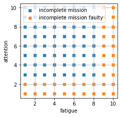
[97]:
fig.savefig("nominal_psfs.pdf", format="pdf", bbox_inches = 'tight', pad_inches = 0)
[104]:
mdl = Rover(params=gen_params('sine', amp=2, fatigue=0, wavelength=30))
endresults, mdlhist = prop.one_fault(mdl, 'Operations', 'no_con', time=15)
[105]:
endresults['faults']
[105]:
{'Operations': ['no_con']}
[106]:
traj_fig = plot_trajectories(mdlhist, faultalpha=0.9)
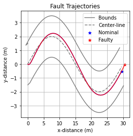
[107]:
fig = rd.plot.mdlhistvals(mdlhist, time=15, fxnflowvals={'GlobalPSF':['fatigue','attention'], 'Ground':['ang', 'vel']}, legend=False)
C:\Users\dhulse\Documents\GitHub\fmdtools\example_rover\HFAC_Analyses\..\..\fmdtools\resultdisp\plot.py:260: UserWarning: Deprecated function. Use resultdisp.plot.mdlhists instead.
warnings.warn("Deprecated function. Use resultdisp.plot.mdlhists instead.")
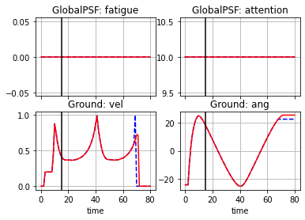
[108]:
mdlhist['nominal'].keys()
[108]:
dict_keys(['flows', 'functions', 'time'])
[113]:
faulthists = {}
faulttimes = [j for j in range(0,30,5)]
for j in faulttimes:
for i in range(10):
np.random.seed()
mdl = Rover(params=gen_params('turn', start=10, fatigue=0))
endresults, mdlhist = prop.one_fault(mdl, 'Operations', 'no_con', time=j)
faulthists[str(i+j)] = mdlhist['faulty']
C:\Users\dhulse\Documents\GitHub\fmdtools\example_rover\HFAC_Analyses\..\..\fmdtools\modeldef.py:801: UserWarning: The screen is already not visible to the operator. All faults removed.
if warnmessage: self.warn(warnmessage, "All faults removed.")
[114]:
fig = plt.figure(figsize=(4.5,3))
fig = plot_trajectories(faulthists,mdlhist['nominal'], faultalpha=0.5, show_labels=False, xlim=(-1,45), ylim=(-5,22))
for t in faulttimes:
plt.annotate("t="+str(t), (mdlhist['nominal']['flows']['Ground']['x'][t], mdlhist['nominal']['flows']['Ground']['y'][t]))
plt.scatter(mdlhist['nominal']['flows']['Ground']['x'][faulttimes], mdlhist['nominal']['flows']['Ground']['y'][faulttimes], marker='X', color='black', label='fault time')
handles, labels = plt.gca().get_legend_handles_labels()
by_label = dict(zip(labels, handles))
plt.legend(by_label.values(), by_label.keys())
[114]:
<matplotlib.legend.Legend at 0x1ecb2c31fa0>
<Figure size 324x216 with 0 Axes>
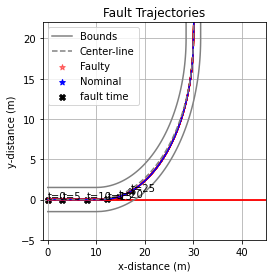
[115]:
fig.savefig("nocon_trajectories.pdf", format="pdf", bbox_inches = 'tight', pad_inches = 0)
[116]:
plothists = faulthists
plothists['nominal'] = mdlhist['nominal']
[117]:
fig, ax = rd.plot.mdlhists(plothists, comp_groups={'no_con':faulthists.keys(),'nominal':['nominal']}, fxnflowvals={'GlobalPSF':['attention']}, cols=1, time_slice=faulttimes, indiv_kwargs={'no_con':{'alpha':0.5, 'color':'red'}, 'nominal':{'color':'blue'}}, time_slice_label='fault time', figsize=(4.5,3), ylabels={('GlobalPSF','attention'):'attention parameter'})
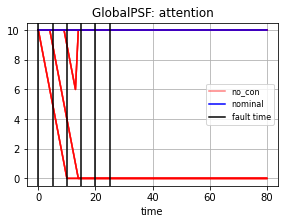
[118]:
fig.savefig("nocon_attention.pdf", format="pdf", bbox_inches = 'tight', pad_inches = 0)
[122]:
faulthists = {}
faulttimes = [j for j in range(0,30,5)]
for j in faulttimes:
for i in range(10):
np.random.seed()
mdl = Rover(params=gen_params('sine', amp=2, fatigue=0, wavelength=30))
endresults, mdlhist = prop.one_fault(mdl, 'Operations', 'no_con', time=j)
faulthists[str(i+j)] = mdlhist['faulty']
[124]:
fig = plt.figure(figsize=(4.5,3))
fig = plot_trajectories(faulthists,mdlhist['nominal'], faultalpha=0.3, show_labels=False, xlim=(-1,32), ylim=(-8,8))
for t in faulttimes:
plt.annotate("t="+str(t), (mdlhist['nominal']['flows']['Ground']['x'][t], mdlhist['nominal']['flows']['Ground']['y'][t]))
plt.scatter(mdlhist['nominal']['flows']['Ground']['x'][faulttimes], mdlhist['nominal']['flows']['Ground']['y'][faulttimes], marker='X', color='black', label='fault time')
handles, labels = plt.gca().get_legend_handles_labels()
by_label = dict(zip(labels, handles))
plt.legend(by_label.values(), by_label.keys())
[124]:
<matplotlib.legend.Legend at 0x1ecb45beac0>
<Figure size 324x216 with 0 Axes>
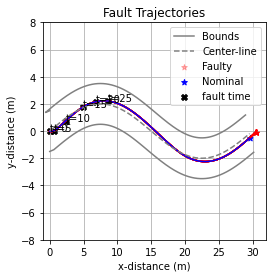
[125]:
fig.savefig("nocon_trajectories_sine.pdf", format="pdf", bbox_inches = 'tight', pad_inches = 0)
[126]:
plothists = faulthists
plothists['nominal'] = mdlhist['nominal']
[127]:
fig, ax = rd.plot.mdlhists(plothists, comp_groups={'no_con':faulthists.keys(),'nominal':['nominal']}, fxnflowvals={'GlobalPSF':['attention']}, cols=1, time_slice=faulttimes, indiv_kwargs={'no_con':{'alpha':0.5, 'color':'red'}, 'nominal':{'color':'blue'}}, time_slice_label='fault time', figsize=(4.5,3), ylabels={('GlobalPSF','attention'):'attention parameter'})
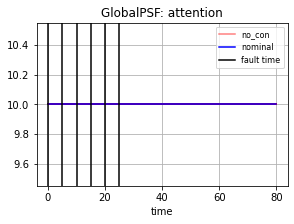
[128]:
fig.savefig("nocon_attention_sine.pdf", format="pdf", bbox_inches = 'tight', pad_inches = 0)
[ ]: